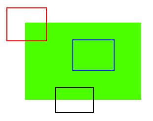

06-特征检测及描述¶
什么是特征？¶
这个章节，我们学习什么是特征，角点等重要概念。
先思考一个问题，大多数人都会玩拼图游戏。首先我们会得到很多小图像块，我们需要正确拼接它们以形成一张大的全景图像。问题是，我们如何描述拼接的过程，进而将我们玩游戏过程的理论变成计算机程序，以便计算机可以玩拼图游戏呢？
如果计算机可以玩拼图游戏，我们是否可以给计算机提供很多自然景观的实景图像，并让计算机将所有这些图像拼接成一张大图像呢？如果计算机可以将多个自然景观的小图像拼合在一起，那么如何提供大量的建筑物或任何结构的图片并告诉计算机从中创建3D模型呢？ 好了，问题和想象还在继续。但这一切都取决于最基本的问题——我们如何玩拼图游戏，如何将许多加扰的图像片段排列成一个大的单个图像，如何将许多自然景观的小图像拼接到一张大的图像上。
答案是，我们正在寻找独特的特定模板或特定特征，这些模板或特征可以轻松跟踪，可以轻松拿来比较。如果我们对这种需求进行定义，可能会发现我们很难用语言来表达它，但是我们知道它们是什么。如果有人要求你说出一些比较多张图像的技巧，你肯定能多少说出一些。
因此，即使是小孩，也可以简单地玩这些游戏。我们在图像中搜索一些独一无二的特征，找到它们，在其他图像中找到相同的特征，将它们对齐，仅此而已。 （在拼图游戏中，我们更多地研究了不同图像的连续性）。所有这些能力都是我们固有的。因此这些特征到底是什么? 显得尤为重要，我们需要将之描述给计算机程序。很难说清楚人类是如何发现这些特征的，因为它已经在我们的大脑中进行了编程。
举个例子，观察下图：

ABCDEF中，哪些特征是好的特征呢？
显然E和F是建筑物的某个拐角，我们可以轻松找到他，如果我们将之在原先位置做一些平移，则会发现图片发生了很大变化。为了更好的理解这个问题，我们将之简化成下图：

观察上图：蓝色块是一个平面区域，我们很难找到并追踪。当你移动这个蓝色块，他在哪都看起来一样。黑色块看起来好一些。是一个边缘，如果您沿垂直方向移动它，则它会发生变化。沿边缘移动（与边缘平行），则看起来相同。对于红色块，这是一个拐角。无论我们将他移动到何处，它看起来都会有变化，这意味着它是唯一的。因此，角点被认为是图像中的良好特征。 （不仅是角落，在某些情况下，斑点也被认为是不错的特征）。
现在，我们回答了我们之前的问题，“这些特征是什么？”。但是出现了另一个问题，我们如何找到它们？或者说我们如何找到拐角？我们还可以以一种直观的方式进行描述，即：寻找图像中在其周围的所有区域中移动（少量）变化最大的区域。在接下来的章节中，这些过程将通过计算机语言描述实现。因此，找到这些图像特征称为特征检测。
什么是特征描述¶
假如我们在图像中找到了一些特征。找到它后，我们应该在其他图像中找到相同的内容。我们所需要做的是围绕该特征采集一个区域，用自己的话语来解释它，例如“上部是蓝天，下部是建筑物区域，在建筑物上有一些玻璃”等，然后在其他图像中搜索相同的区域。这些都是我们在描述特征。
同样的，计算机也应当描述特征周围的区域，以便可以在其他图像中找到它。我们将计算机对特征周围的描述称为特征描述。获得特征及其描述后，我们可以在所有图像中找到相同的特征并将它们对齐，拼接或进行其他操作。 因此，我们正在通过OpenCV中的不同算法来实现查找特征的查找，对其进行描述，对它们进行匹配等。